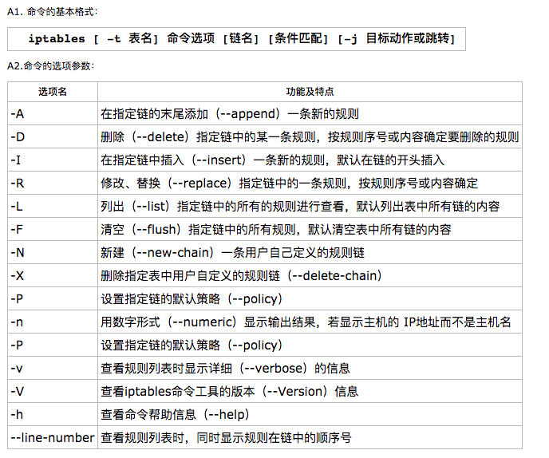
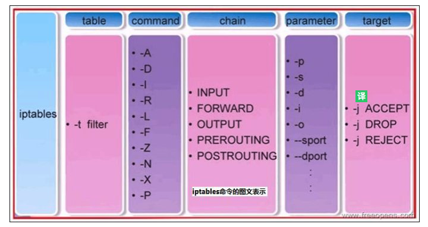
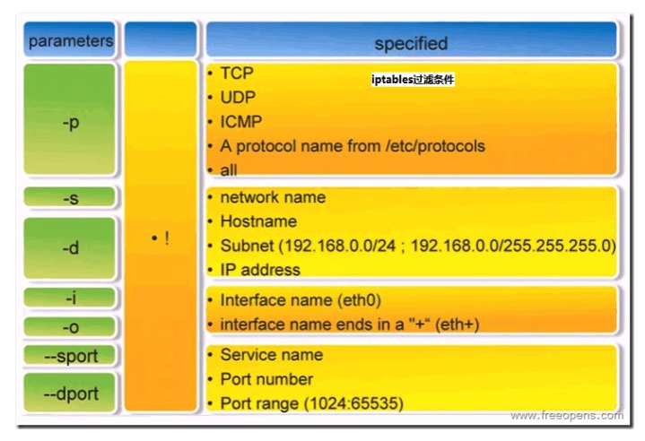
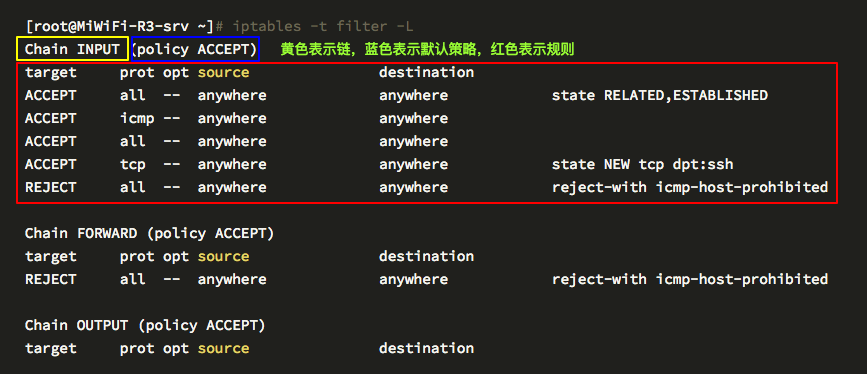

纸上得来终觉浅，绝知此事要躬行。
iptables 是运行在用户空间的应用软件，通过控制 Linux 内核 netfilter 模块，来管理网络数据包的处理和转发。在大部分 Linux 发行版中，可以通过手册页 或 man iptables 获取用户手册。通常 iptables 需要内核模块支持才能运行，此处相应的内核模块通常是 Xtables。
1. 通用格式
**如果我们经常操作关系型数据库，那就肯定知道可能”增删改查”的重要性。当我们定义
iptables规则时，所做的操作其实类似于”增删改查”**。
- 通用命令格式：
iptables [-t table] sub_command chain rule [-j target]
# iptables --help
iptables [-t table] {-A|-D} chain rule-specification
iptables [-t table] -I chain [rulenum] rule-specification
iptables [-t table] -R chain rulenum rule-specification
iptables [-t table] -D chain rulenum
iptables [-t table] -S [chain [rulenum]]
iptables [-t table] {-F|-L|-Z} [chain [rulenum]] [options...]
iptables [-t table] -N chain
iptables [-t table] -X [chain]
iptables [-t table] -P chain target
iptables [-t table] -E old-chain-name new-chain-name
- table：指定需要增删改查的表
filternatmangleraw
- sub_command：指明需要的增删改查命令
- 链管理类命令
- 规则管理类命令
- 链规则查看类命令
- chain：指明需要的增删改查的链
PREROUTINGINPUTFORWARDOUTPUTPOSTROUTING
- target：指明需要执行的动作
TARGETACCEPTDROPREJECTRETURNREDIRECTLOGDNATSNATMASQUERADE
2. 命令选项
主要介绍 iptables 防火墙的子命令选择和使用方式！



- 链管理
| 命令参数 | 作用说明 |
|---|---|
-P |
policy，设置链的默认策略；对 filter 表中的链而言，默认策略通常有 ACCEPT, DROP, REJECT |
-F |
flush，清空规则链；省略链，表示清空指定表上的所有的链 |
-N |
new, 创建用户的自定义规则链；不能和已有的链重名 |
-X |
drop, 删除用户自定义的空的规则链 |
-Z |
zero，清零，置零规则计数器 |
-E |
rEname，重命名用户自定义链；引用计数不为 0 的自定义链，无法改名，也无法删除 |
- 规则管理
| 命令参数 | 作用说明 |
|---|---|
-A |
append，在规则链的末尾加入新规则 |
-I table num |
insert，在规则链的头部加入新规则；省略规则编号，默认插入到第一条 |
-D table num |
delete，删除某一条规则，可以是指定匹配条件或者规则编号；省略规则编号，默认删除第一条 |
-R table num |
replace，替换指定链上的指定规则；省略规则编号，默认替换第一条 |
- 链规则查看
| 命令参数 | 作用说明 |
|---|---|
-L |
list，列出指定链上的所有规则 |
-n |
numberic，以数字格式显示地址和端口号 |
-v |
verbose，显示显示计数器等详细信息；-vv/-vvv 越多表示越详细 |
-x |
exactly, 显示计数器计数结果的精确值 |
--line-numbers |
显示链的规则编号 |
3. 匹配条件
匹配条件来介绍在编写防火墙规则的时候具体过滤参数的使用细则！
- 基本匹配
| 命令参数 | 作用说明 |
|---|---|
-p |
-p, --protocol {tcp|udp|icmp}；匹配协议，如 TCP、UDP、ICMP |
-s |
[!] -s, --src, --source IP|Netaddr；匹配来源地址，IP/MASK，加叹号“!”表示除这个 IP 外 |
-d |
[!] -d, --dst, --destination IP|Netaddr；匹配目标地址，IP/MASK，加叹号“!”表示除这个 IP 外 |
-i 网卡名称 |
-i, --in-interface IFACE；匹配从这块网卡流入的数据；仅能用于 PREROUTING，INPUT 及 FORWARD 链上 |
-o 网卡名称 |
-o, --out-interface IFACE；匹配从这块网卡流出的数据；仅能用于 FORWARD，OUTPUT 及 POSTROUTING 链上 |
- 扩展匹配
| 命令参数 | 作用说明 |
|---|---|
--dport num |
匹配目标端口号 |
--sport num |
匹配来源端口号 |
--syn |
匹配 syn 标志位 |
--icmp-type |
匹配 icmp 协议类型 |
4. 目标类型
目标类型需要使用
-j参数指定才可以使用
| 编号 | 命令参数 | 作用说明 |
|---|---|---|
| 1 | TARGET |
跳转至指定的 TARGET 上 |
| 2 | ACCEPT |
接受请求 |
| 3 | DROP |
丢弃请求 |
| 4 | REJECT |
拒绝请求 |
| 5 | RETURN |
返回调用链 |
| 6 | REDIRECT |
端口重定向 |
| 7 | LOG |
记录日志 |
| 8 | MARK |
做防火墙标记 |
| 9 | DNAT |
目标地址转换 |
| 10 | SNAT |
源地址转换 |
| 11 | MASQUERADE |
地址伪装 |
| 12 | 自定义链 |
由自定义链上的规则进行匹配检查 |
5. 保存规则
在默认的情况下，我们对防火墙所做出的修改都是临时的，换句话说就是，当重启
iptables服务或者重启服务器以后，我们平常添加的规则或者对规则所做出的修改都将消失，为了防止这种情况的发生，我们需要将规则保存。
CentOS6CentOS6中，使用service iptables save命令新的保存的防火墙规则CentOS6中，可以使用iptables-save > /etc/sysconfig/iptables命令新的保存的防火墙规则CentOS6中，可以通过iptables-restore < /etc/sysconfig/iptables命令读取保存的防火墙规则CentOS6中，规则默认保存在/etc/sysconfig/iptables文件中
CentOS7CentOS7中，已不再使用init风格的脚本启动服务，而是使用unit文件CentOS7中，默认使用firewall替代了原来的iptables防火墙工具CentOS7中，只要通过yum源安装iptables与iptables-services即可
# 配置好yum源以后安装iptables-service
yum install -y iptables-services
# 停止firewalld
systemctl stop firewalld
# 禁止firewalld自动启动
systemctl disable firewalld
# 启动iptables
systemctl start iptables
# 将iptables设置为开机自动启动，以后即可通过iptables-service控制iptables服务
systemctl enable iptables
6. 实例演示
介绍实际使用当中编写规则的具体细则！

- 【1】查看
filter表的各个链规则-t指明表-L列出规则
[root@MiWiFi-R3-srv ~]# iptables -t filter -L
Chain INPUT (policy ACCEPT)
target prot opt source destination
ACCEPT all -- anywhere anywhere state RELATED,ESTABLISHED
ACCEPT icmp -- anywhere anywhere
ACCEPT all -- anywhere anywhere
ACCEPT tcp -- anywhere anywhere state NEW tcp dpt:ssh
REJECT all -- anywhere anywhere reject-with icmp-host-prohibited
Chain FORWARD (policy ACCEPT)
target prot opt source destination
REJECT all -- anywhere anywhere reject-with icmp-host-prohibited
Chain OUTPUT (policy ACCEPT)
target prot opt source destination
- 【2】只查看
filter表中INPUT链的规则- 省略
-t选项默认为filter表 - 使用
--line-number即可显示规则的编号 -n表示不对 IP 地址进行名称反解，直接显示 IP 地址，iptables 默认进行名称解析
- 省略
[root@MiWiFi-R3-srv ~]# iptables -t filter -L INPUT
Chain INPUT (policy ACCEPT)
target prot opt source destination
ACCEPT all -- anywhere anywhere state RELATED,ESTABLISHED
ACCEPT icmp -- anywhere anywhere
ACCEPT all -- anywhere anywhere
ACCEPT tcp -- anywhere anywhere state NEW tcp dpt:ssh
REJECT all -- anywhere anywhere reject-with icmp-host-prohibited
[root@MiWiFi-R3-srv ~]# iptables -t filter -nL INPUT --line-number
Chain INPUT (policy ACCEPT)
num target prot opt source destination
1 ACCEPT all -- 0.0.0.0/0 0.0.0.0/0 state RELATED,ESTABLISHED
2 ACCEPT icmp -- 0.0.0.0/0 0.0.0.0/0
3 ACCEPT all -- 0.0.0.0/0 0.0.0.0/0
4 ACCEPT tcp -- 0.0.0.0/0 0.0.0.0/0 state NEW tcp dpt:22
5 REJECT all -- 0.0.0.0/0 0.0.0.0/0 reject-with icmp-host-prohibited
[root@MiWiFi-R3-srv ~]# iptables -t filter -nL INPUT
Chain INPUT (policy ACCEPT)
target prot opt source destination
ACCEPT all -- 0.0.0.0/0 0.0.0.0/0 state RELATED,ESTABLISHED
ACCEPT icmp -- 0.0.0.0/0 0.0.0.0/0
ACCEPT all -- 0.0.0.0/0 0.0.0.0/0
ACCEPT tcp -- 0.0.0.0/0 0.0.0.0/0 state NEW tcp dpt:22
REJECT all -- 0.0.0.0/0 0.0.0.0/0 reject-with icmp-host-prohibited
- 【3】查看
filter表中INPUT链的规则的详细信息pkts：对应规则匹配到的报文的个数bytes：对应匹配到的报文包的大小总和target：规则对应的动作，即规则匹配成功后需要采取的措施prot：表示规则对应的协议，是否只针对某些协议应用此规则opt：表示规则对应的选项in：表示数据包由哪个网卡接口流入，我们可以设置通过哪块网卡流入的报文需要匹配当前规则out：表示数据包由哪个网卡接口流出，我们可以设置通过哪块网卡流出的报文需要匹配当前规则source：表示规则对应的源头地址，可以是一个 IP，也可以是一个网段destination：表示规则对应的目标地址。可以是一个 IP，也可以是一个网段policy：当前链的默认策略packets：当前 INPUT 链默认策略匹配到的包的数量bytes：当前链默认策略匹配到的所有包的大小总和
[root@MiWiFi-R3-srv ~]# iptables -t filter -vL INPUT
Chain INPUT (policy ACCEPT 0 packets, 0 bytes)
pkts bytes target prot opt in out source destination
2796 425K ACCEPT all -- any any anywhere anywhere state RELATED,ESTABLISHED
0 0 ACCEPT icmp -- any any anywhere anywhere
7 579 ACCEPT all -- lo any anywhere anywhere
1 64 ACCEPT tcp -- any any anywhere anywhere state NEW tcp dpt:ssh
40 2580 REJECT all -- any any anywhere anywhere reject-with icmp-host-prohibited
- 【4】添加拒绝 192.168.31.19 主机的所有报文访问当前机器
[root@MiWiFi-R3-srv ~]# iptables -t filter -I INPUT -p icmp -s 192.168.31.19 -j DROP
[root@MiWiFi-R3-srv ~]# ping 192.168.31.19
PING 192.168.31.19 (192.168.31.19) 56(84) bytes of data.
^C
--- 192.168.31.19 ping statistics ---
2 packets transmitted, 0 received, 100% packet loss, time 1937ms
# 已经有2个包被对应的规则匹配到，总计大小168bytes
[root@MiWiFi-R3-srv ~]# iptables -t filter -vL INPUT
Chain INPUT (policy ACCEPT 0 packets, 0 bytes)
pkts bytes target prot opt in out source destination
2 168 DROP icmp -- any any 192.168.31.19 anywhere
4642 642K ACCEPT all -- any any anywhere anywhere state RELATED,ESTABLISHED
4 336 ACCEPT icmp -- any any anywhere anywhere
7 579 ACCEPT all -- lo any anywhere anywhere
2 128 ACCEPT tcp -- any any anywhere anywhere state NEW tcp dpt:ssh
64 4164 REJECT all -- any any anywhere anywhere reject-with icmp-host-prohibited
- 【5】清除之前添加的拒绝 192.168.31.19 主机规则
# [方法一] 根据规则的编号去删除规则
[root@MiWiFi-R3-srv ~]# iptables -t filter -D INPUT 1
# [方法二] 根据具体的匹配条件与动作删除规则
[root@MiWiFi-R3-srv ~]# iptables -t filter -D INPUT -p icmp -s 192.168.31.19 -j DROP
- 【6】修改之前添加的拒绝 192.168.31.19 主机规则为拒绝 192.168.31.173
[root@MiWiFi-R3-srv ~]# iptables -t filter -R INPUT 1 -p icmp -s 192.168.31.173 -j DROP
- 在 iptables 命令后添加-L 参数查看已有的防火墙规则链
[root@localhost ~]# iptables -L
Chain INPUT (policy ACCEPT)
target prot opt source destination
ACCEPT all -- anywhere anywhere ctstate RELATED,ESTABLISHED
ACCEPT all -- anywhere anywhere
INPUT_direct all -- anywhere anywhere
INPUT_ZONES_SOURCE all -- anywhere anywhere
INPUT_ZONES all -- anywhere anywhere
ACCEPT icmp -- anywhere anywhere
REJECT all -- anywhere anywhere reject-with icmp-host-prohibited
………………省略部分输出信息………………
- 在 iptables 命令后添加-F 参数清空已有的防火墙规则链
[root@localhost ~]# iptables -F
[root@localhost ~]# iptables -L
Chain INPUT (policy ACCEPT)
target prot opt source destination
………………省略部分输出信息………………
- 把 INPUT 规则链的默认策略设置为拒绝，OUTPUT 链为默认策略 ACCEPT
# 当把INPUT链设置为默认拒绝后，就要往里面写入允许策略了
# 否则所有流入的数据包都会被默认拒绝掉，需要留意规则链的默认策略拒绝动作只能是DROP，而不能是REJECT
[root@localhost ~]# iptables -P INPUT DROP
[root@localhost ~]# iptables -L
Chain INPUT (policy DROP)
target prot opt source destination
…………省略部分输出信息………………
- 向 INPUT 链中添加允许 ICMP 流量进入的策略规则
# 在INPUT链设置为默认拒绝后，允许ICMP流量进入的策略规则
[root@localhost ~]# iptables -I INPUT -p icmp -j ACCEPT
[root@localhost ~]# ping -c 3 192.168.10.10
PING 192.168.10.10 (192.168.10.10) 56(84) bytes of data.
64 bytes from 192.168.10.10: icmp_seq=1 ttl=64 time=0.156 ms
64 bytes from 192.168.10.10: icmp_seq=2 ttl=64 time=0.117 ms
64 bytes from 192.168.10.10: icmp_seq=3 ttl=64 time=0.099 ms
--- 192.168.10.10 ping statistics ---
3 packets transmitted, 3 received, 0% packet loss, time 2999ms
rtt min/avg/max/mdev = 0.090/0.115/0.156/0.027 ms
- 删除 INPUT 规则链中刚刚加入的那条策略并把默认策略设置为允许
# 删除允许ICMP流量的策略规则
[root@localhost ~]# iptables -D INPUT 1
[root@localhost ~]# iptables -P INPUT ACCEPT
[root@localhost ~]# iptables -L
Chain INPUT (policy ACCEPT)
target prot opt source destination
………………省略部分输出信息………………
- 将 INPUT 规则链设置为只允许指定网段的主机访问本机的 22 端口，拒绝来自其他所有主机的流量
# 一定要把允许动作放到拒绝动作前面，否则所有的流量就将被拒绝掉，从而导致任何主机都无法访问我们的服务
[root@localhost ~]# iptables -I INPUT -s 192.168.10.0/24 -p tcp --dport 22 -j ACCEPT
[root@localhost ~]# iptables -A INPUT -p tcp --dport 22 -j REJECT
[root@localhost ~]# iptables -L
Chain INPUT (policy ACCEPT)
target prot opt source destination
ACCEPT tcp -- 192.168.10.0/24 anywhere tcp dpt:ssh
REJECT tcp -- anywhere anywhere tcp dpt:ssh reject-with icmp-port-unreachable
………………省略部分输出信息………………
# 客户端主机A可以使用ssh连接我们的ssh服务了
[root@Client A ~]# ssh 192.168.10.10
The authenticity of host '192.168.10.10 (192.168.10.10)' can't be established.
ECDSA key fingerprint is 70:3b:5d:37:96:7b:2e:a5:28:0d:7e:dc:47:6a:fe:5c.
Are you sure you want to continue connecting (yes/no)? yes
Warning: Permanently added '192.168.10.10' (ECDSA) to the list of known hosts.
root@192.168.10.10's password:
Last login: Sun Feb 12 01:50:25 2017
# 客户端主机B不在指定网段中，所有拒绝访问
[root@Client B ~]# ssh 192.168.10.10
Connecting to 192.168.10.10:22...
Could not connect to '192.168.10.10' (port 22): Connection failed.
- 向 INPUT 规则链中添加拒绝 192.168.10.5 主机访问本机 80 端口（Web 服务）的策略规则
[root@localhost ~]# iptables -I INPUT -p tcp -s 192.168.10.5 --dport 80 -j REJECT
[root@localhost ~]# iptables -L
Chain INPUT (policy ACCEPT)
target prot opt source destination
REJECT tcp -- 192.168.10.5 anywhere tcp dpt:http reject-with icmp-port-unreachable
REJECT udp -- anywhere anywhere udp dpt:italk reject-with icmp-port-unreachable
REJECT tcp -- anywhere anywhere tcp dpt:italk reject-with icmp-port-unreachable
ACCEPT tcp -- 192.168.10.0/24 anywhere tcp dpt:ssh
REJECT tcp -- anywhere anywhere tcp dpt:ssh reject-with icmp-port-unreachable
………………省略部分输出信息………………
- 向 INPUT 规则链中添加拒绝所有主机访问本机 1000 ～ 1024 端口的策略规则
[root@localhost ~]# iptables -A INPUT -p tcp --dport 1000:1024 -j REJECT
[root@localhost ~]# iptables -A INPUT -p udp --dport 1000:1024 -j REJECT
[root@localhost ~]# iptables -L
Chain INPUT (policy ACCEPT)
target prot opt source destination
REJECT tcp -- 192.168.10.5 anywhere tcp dpt:http reject-with icmp-port-unreachable
REJECT udp -- anywhere anywhere udp dpt:italk reject-with icmp-port-unreachable
REJECT tcp -- anywhere anywhere tcp dpt:italk reject-with icmp-port-unreachable
ACCEPT tcp -- 192.168.10.0/24 anywhere tcp dpt:ssh
REJECT tcp -- anywhere anywhere tcp dpt:ssh reject-with icmp-port-unreachable
REJECT tcp -- anywhere anywhere tcp dpts:cadlock2:1024 reject-with icmp-port-unreachable
REJECT udp -- anywhere anywhere udp dpts:cadlock2:1024 reject-with icmp-port-unreachable
………………省略部分输出信息………………